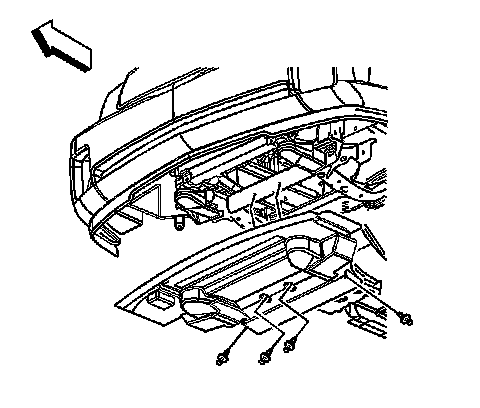
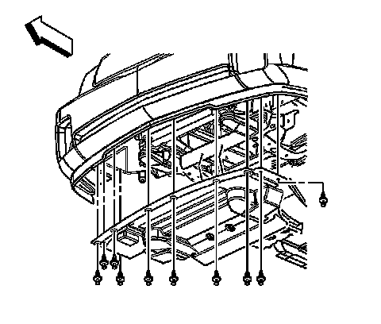

Air Dam: Service and Repair
Front Air Deflector Replacement
Removal Procedure
1.Raise and support the vehicle. Refer to Lifting and Jacking the Vehicle .

2.Remove the push-in retainers securing the air deflector to the vehicle.
3.Remove the front air deflector.
Installation Procedure

1.Position the front air deflector to the vehicle.
2.Install the push-in retainers to secure the air deflector to the engine cradle.

3.Install the push-in retainers to secure the front of the air deflector to the fascia.
4.Lower the vehicle.